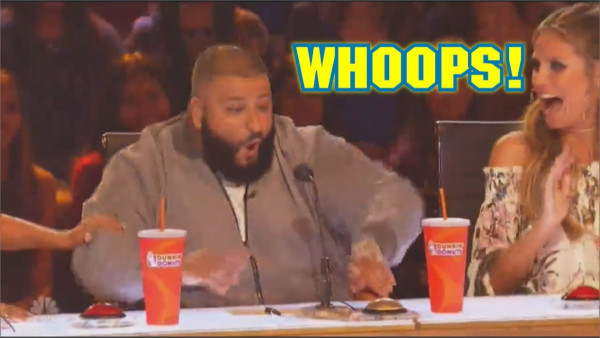

Innihald
Shéyaa Bin Abraham-Joseph (born October 22, 1992), known by his stage name 21 Savage, is a rapper, songwriter and record producer who was born in London, England, and is based in Atlanta, Georgia.
Here is Ball w/o you from 21 Savage.
Tyler Gregory Okonma (born March 6, 1991), known professionally as Tyler, The Creator, is an American rapper, songwriter, record producer, music video director and designer.
Here is Yonkers from Tyler, The Creator.
